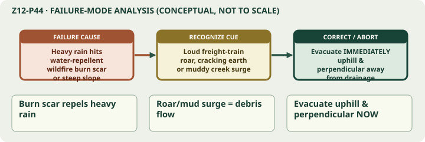

Z12-P44 · Extreme environments · New manuscript
Recognize post-wildfire burn-scar debris flows and landslide warnings
Avoid lethal fast-moving mud, rock and log surges on saturated steep slopes and recent wildfire burn scars.
When it applies · Mountain canyons, steep coastal bluffs and areas downstream of recent wildfire burn scars during heavy rain or rapid snowmelt.
Equipment · Official NWS Flash Flood/Debris Flow alerts, regional burn-scar map and pre-planned high-ground exits.

Actions
- Recognize why recent wildfire burn scars remain acutely dangerous for years: intense heat strips vegetation and turns soil water-repellent so even modest heavy rain unleashes high-speed mud, boulder and log debris flows.[X11, E04]
- Watch and listen for immediate warning cues: a faint rumbling roar growing louder (like a freight train), sudden muddy surge or abrupt drying of a creek, newly cracking soil, leaning trees or shifting boulders on steep slopes.[X11]
- Evacuate immediately PERPENDICULAR AND UPHILL out of valley floors and canyon channels if cues or warnings appear—never try to outrun a debris flow down a canyon road or creek bed.[X11, T13, E04]
Failure recognition · Camping along a peaceful creek inside a two-year-old wildfire burn scar during a forecast summer cloudburst.[X11, E04]
Verify · Check whether your mountain route crosses recent burn scars or steep saturated slide zones before departing in rainy forecasts.[X11, E01, ED]
Stop or change course · Any Flash Flood Warning near a burn scar, loud slope rumbling or sudden muddy creek surge triggers instant uphill evacuation away from the drainage.[X11, T16, T13]
Evidence and editorial notes
- E01 · Minnesota DNR · Safety in State Forests (current web edition)
- Section: Before your trip and while visiting · Conditions: State-forest travel and backcountry planning
Support: Know the route, check conditions, carry navigation and safety equipment and share trip details.
Limitations: Conditions and trail maintenance vary seasonally across forest units. · Conflicting evidence: None; aligns with NPS-H.
Editorial note: Foundation for trip planning and pre-departure risk checks. · Specialist reviewer: Land management and search and rescue
Primary source · checked 2026-11-24 - E04 · NWS · Flood Safety: Key Points for Camping and Hiking (agency PDF)
- Section: Before and during camping; know your surroundings · Conditions: Stream valleys and runoff channels subject to flash flooding
Support: Choose higher ground away from water channels. Rain far upstream can drive rapid flooding.
Limitations: Dry streambeds and gentle swales can flood rapidly without local rainfall. · Conflicting evidence: None; aligns with NWS-FLOOD.
Editorial note: Core hydrological exclusion rule for shelter placement. · Specialist reviewer: Emergency management and hydrology
Primary source · checked 2026-11-24 - T13 · FEMA / Ready.gov · Evacuation (current web edition)
- Section: Evacuation > Before, During, and After Evacuation · Conditions: Developing wildfire, flood, storm, or infrastructure emergency
Support: Identify multiple exit routes ahead of time, keep essential go-bags and fuel ready, leave promptly when authorities order evacuation, and do not return until officials declare the area safe.
Limitations: Late departure can trap groups behind road closures, smoke, or rising water. · Conflicting evidence: None; pairs with NWS-FLOOD and READY-WILDFIRE.
Editorial note: Establishes clear leave-early decision thresholds for multi-hazard scenarios. · Specialist reviewer: Emergency management
Primary source · checked 2026-11-24 - T16 · NWS · Flood Safety (current web edition)
- Section: Flood Watches and Warnings; Turn Around Don’t Drown · Conditions: U.S. flood alerts and routes crossing moving or standing floodwater
Support: Use the local flood alert wording and follow directions to move to safer higher ground. Never drive around a barricade or enter a flooded route.
Limitations: Stages, timing and detours depend on event and locality; no observable safe crossing depth. · Conflicting evidence: See A02 claim audit for boundaries.
Editorial note: Clarifies Watch vs Warning decision thresholds in Z01 scenarios. · Specialist reviewer: Emergency management and meteorology
Primary source · checked 2026-11-24 - X11 · FEMA / Ready.gov · Landslides and Debris Flow (current web edition)
- Section: Landslides and Debris Flow > Warning Signs and Burn Scars · Conditions: Steep slopes, recent wildfire burn scars and saturated mountain/coastal terrain
Support: Heavy rainfall on steep terrain or wildfire burn scars triggers fast-moving debris flows; watch for rumbling, tilting trees, sudden muddy stream surges or new ground cracks and evacuate perpendicular/uphill away from valleys immediately.
Limitations: Debris flows travel faster than a person can run and recur in previously scarred drainages. · Conflicting evidence: None; pairs with E04 and E17.
Editorial note: Supports mountain/burn-scar landslide and debris-flow hazard cards. · Specialist reviewer: Geological hazard and emergency management
Primary source · checked 2026-11-24
Source lineage · Ready.gov landslides and NWS flood safety; new manuscript · Classification · New manuscript.